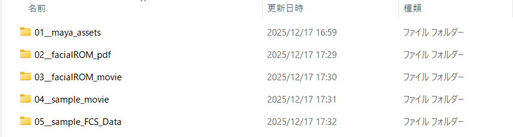
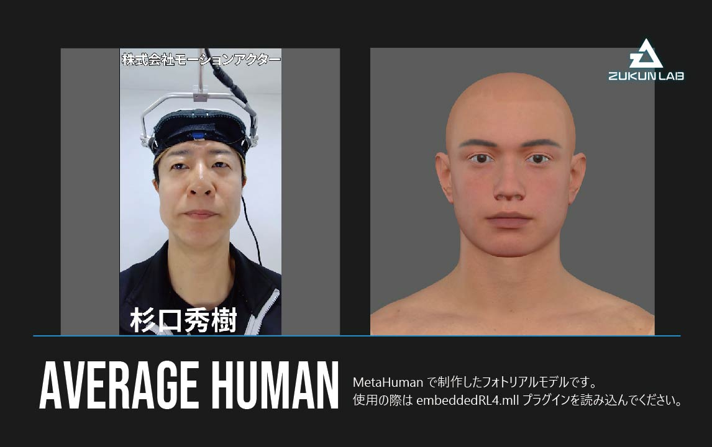
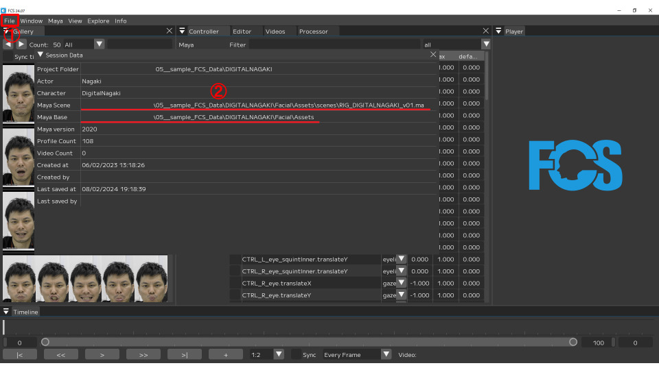

FCS Starter Kit
The FCS Starter Kit is available to those who have purchased the full version of FCS or applied for a trial of the demo version.
By using the FCS Starter Kit, you can experience FCS through the entire CG video production workflow using facial capture, from facial capture video analysis to animation output for 3D models to rendering verification with a game engine.
FCS Starter Kit Contents
The FCS Starter Kit includes the following contents.
{kind=link}

Maya 3D model data (01__maya_assets)
Facial ROM exercise expression list PDF (02__facialROM_pdf)
Facial ROM exercise video (03__facialROM_movie)
Sample video for video analysis and animation output (04__sample_movie)
FCS Session reference data with pre-created Profiles (05__sample_FCS_Data)
Note
Some contents may require separately obtaining third-party game engines or plugins.
1: Maya 3D Model Data
The Maya 3D model data folder contains the following two types of model data.
AVERAGE HUMAN
{kind=link}

AVERAGE HUMAN is a 3D model created with MetaHuman (a digital human creation tool) provided by Epic Games, the developer of Unreal Engine.
For more details about MetaHuman, please refer to the MetaHuman introduction page provided by Epic Games.
AVERAGE HUMAN can be animated using the standard MetaHuman facial controller.
For instructions on how to use the MetaHuman facial controller, please refer to this YouTube tutorial video provided by Epic Games.
Please make sure to read the included readme.txt before use.
Note
Using AVERAGE HUMAN requires verification and rendering in Unreal Engine.
Please install Unreal Engine and create a project for verification in advance.
For more details about Unreal Engine, please refer to the Unreal Engine introduction page provided by Epic Games.
Caution
Please note that rendering in Maya or use with Unity* is not supported.
*A game engine developed and provided by Unity Technologies.
NIKE SHIKINO

NIKE SHIKINO is an original cel-shaded 3D model created by Zukun Lab.
The model’s face is configured with blend shapes compliant with Apple ARKit*, and it can be animated by changing the values of each target shape.
*An AR framework developed and provided by Apple, whose face tracking system uses 52 facial expression target shapes.
NIKE SHIKINO can be used with Maya, Unreal Engine, and Unity.
Please make sure to read the included readme.txt before use.
2: Facial ROM Exercise Expression List PDF
In video analysis using facial capture, knowing the intensity limits of expressions that the filmed person can make improves the efficiency of video analysis.
A series of expression patterns designed to capture the range of motion (ROM: Range Of Motion) of facial parts such as eyebrows, eyes, and mouth is called facial ROM exercises.
This starter kit includes a PDF of approximately 50 expression patterns that Zukun Lab actually uses in facial capture sessions.
3: Facial ROM Exercise Video
This is a video recording of facial ROM exercises. Please load it into FCS to use.
4: Sample Video for Video Analysis and Animation Output
This is a sample video for use in video analysis. Please load it into FCS to use.
About the sample video contents
- AVERAGE HUMAN: 9 dialogue videos with different emotions* (all dialogue is identical)
- NIKE SHIKINO: 9 dialogue videos with different emotions* (all dialogue is identical)
\ *Recorded with the cooperation of Motion Actor Inc. - Hideki Sugiguchi and Mao
5: FCS Session Reference Data with Pre-created Profiles
This is FCS Session data for AVERAGE HUMAN and NIKE SHIKINO, created as reference examples for trying out video analysis.
Both already have approximately 50 Profiles pre-created from the facial ROM exercise video, so by loading a sample video and creating Profiles, you can experience FCS without building a Session from scratch.
Warning
Analysis is possible without creating Profiles, but the accuracy will not be sufficient on its own, so you need to create at least one Profile from the sample video.
For specific instructions on creating Profiles, please refer to the Profile creation page.
The FCS Session is stored within a pre-built FCS Session folder structure.
For details on the FCS Session folder structure, please refer to the Session creation or opening page.
Immediately after downloading, the paths for Maya data and sample videos will differ, so reconfiguration* is required.
Please refer to the procedures below for how to reconfigure Maya data paths and how to import sample videos.
*Maya data and sample videos do not necessarily need to be stored within the FCS Session folder structure.
How to reconfigure Maya data paths
For Maya data, you need to reconfigure both the Maya Scene path and Maya Base path in FCS.
Both paths can be reconfigured using the same procedure below.
1. After launching FCS and opening a Session, open the File→Session→Info window
2. Right-click on the field displaying the current path and click the Edit button
3. Click the Browse button in the Change window to open the file dialog
4. Select the corresponding file within the FCS Session folder structure and click the Open button
5. After confirming that the path in the Change window has been updated, click the Save button
{kind=link}


How to import sample videos
Sample videos can be imported using the following procedure.
1. After launching FCS and opening a Session, open the Videos window
2. Click the Import button to open the file dialog
3. Select the corresponding file within the FCS Session folder structure and click the Open button